25/11/2026 · Prueba en la escena real PruebaBosque02.tscn, con suelo, paleta, iluminación, cámara y personaje del juego.
29 comprobaciones correctas · 0 fallos · 0 errores de script. 12 capturas de los actores en ejecución. Abrir lámina completa.
Se colocan temporalmente seis objetos en un claro: cristal, roca, caldera, barril y dos tocones. Los cuatro primeros se montan mediante la gramática de puzles y los tocones mediante la fábrica del nivel. Las colocaciones se crean en memoria; no se modifica el archivo del nivel. Se aísla el combate y el contagio a la hierba de los dos tocones para observar sus estados.
Secuencia: fuego sobre ambos tocones; agua apaga uno parcialmente quemado; extracción del cristal y pulso posterior; daño intermedio y rotura de roca; caldera abollada en caliente y enfriada; apertura de barril con entrada de E; consumo completo del primer tocón. Se comprueban el paso liberado y la conservación del tocón apagado.
Después se escribe una copia de flags en flags_revision.json, se destruye la escena y se vuelve a cargar Bosque02. Las flags se leen de ese archivo. Se verifica cristal agotado sin duplicar recurso, roca rota y fragmentos en la misma pose, abolladura, tapa abierta y restos del tocón. Es una prueba de las flags persistentes; no sobrescribe una partida del usuario.
Corrección encontrada por esta prueba: E podía coger un objeto cercano antes de abrir el barril. El barril se registra ahora en la pista común de proximidad; la recogida cede a esa interacción y la pista ofrece Abrir/Cerrar. Se repitió la entrada real de teclado en Bosque02 y la batería de conexión.
Pendiente resuelto: el tocón apagado a mitad de combustión conserva ahora progreso, origen y alcance de sus marcas al recargar. Vuelve sin llamas, calor ni humedad. Puede volver a prenderse y continuar desde ese frente; el consumo definitivo limpia el estado parcial. El mismo guardado está conectado a troncos, puertas y torres de madera creados por la fábrica. La humedad y el calor siguen siendo transitorios.
Las vistas ajustan el zoom y el giro de 180° disponible en el juego para evitar los pinos del primer plano; el detalle de la caldera muestra su cara abollada. Se conservan escena, vegetación, suelo e iluminación. Solo se ocultan avisos y paneles de HUD para leer la lámina; la pista E permanece visible.
Escenario reproducible · Log completo · Posiciones · Conexiones implementadas
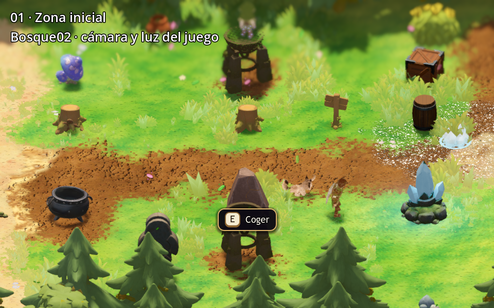
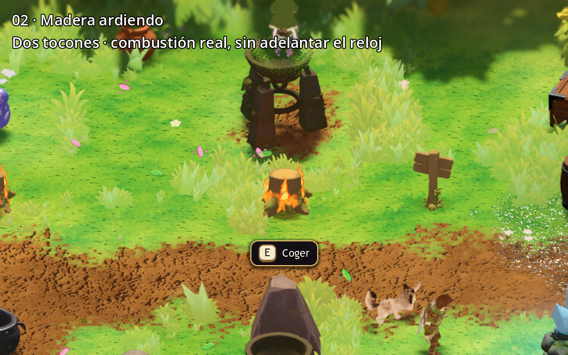
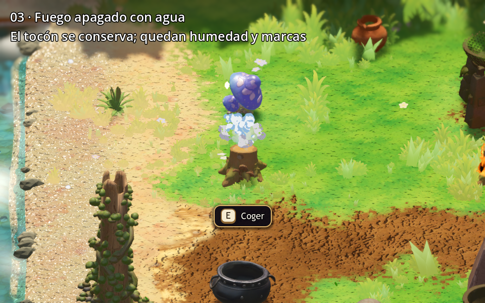
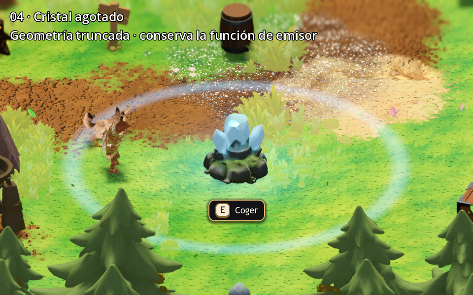
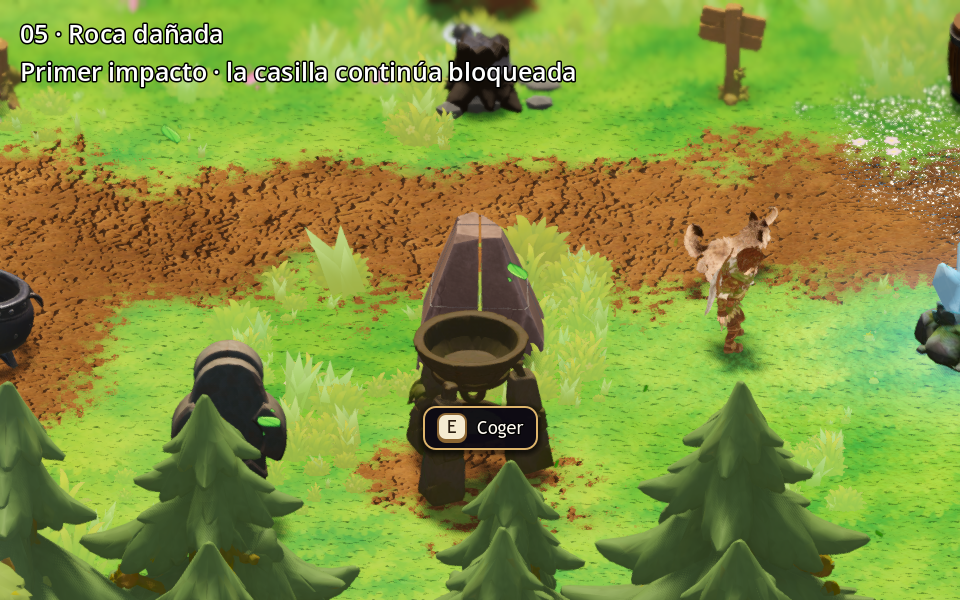
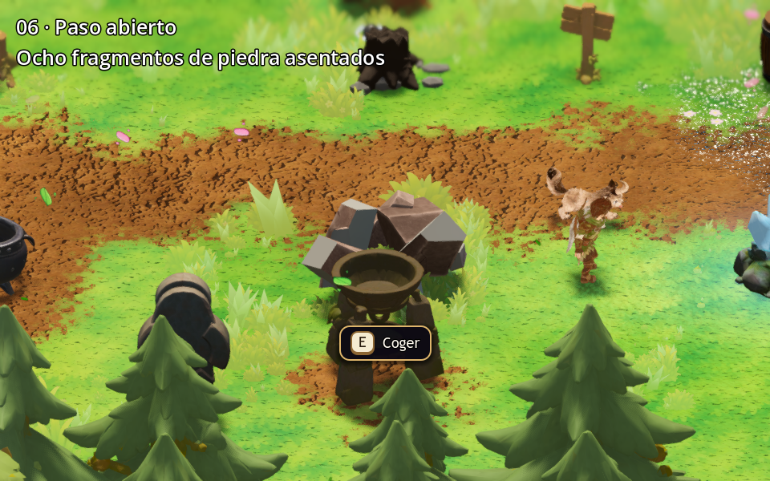
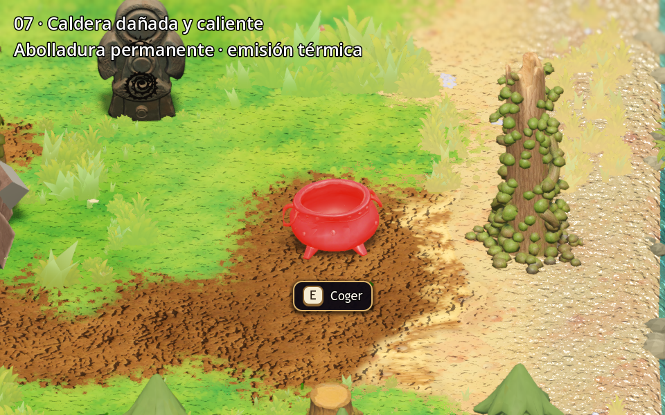
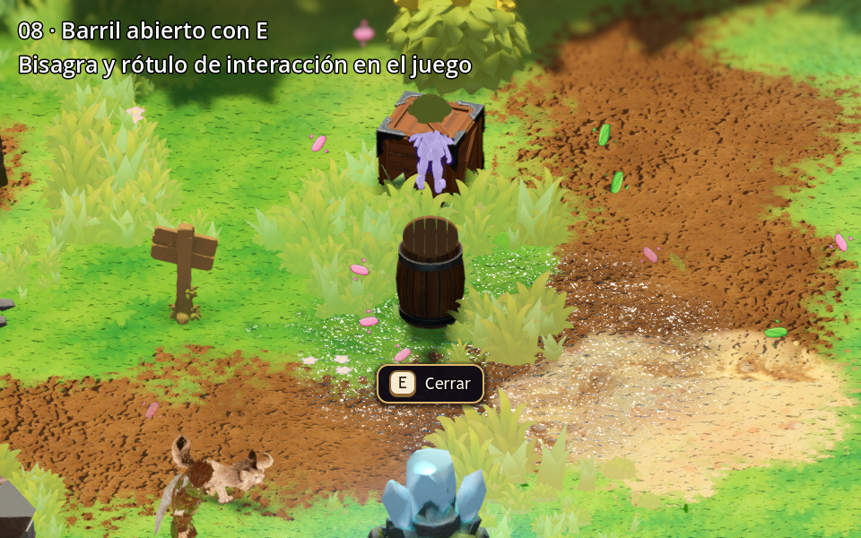
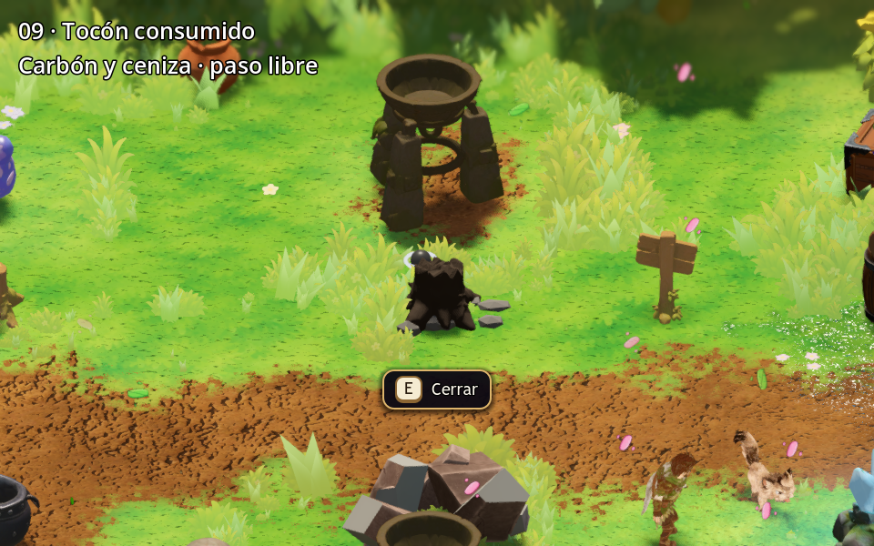
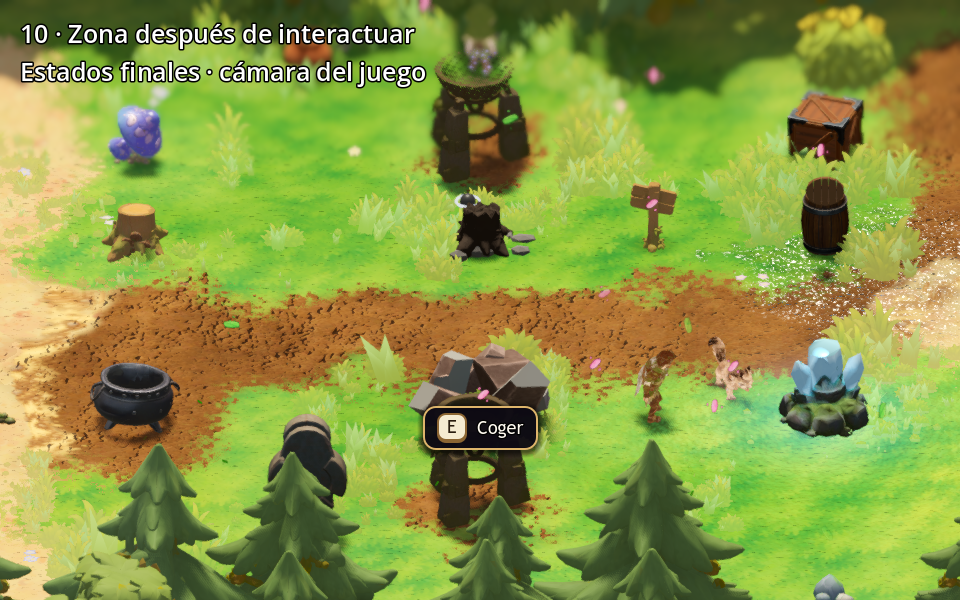
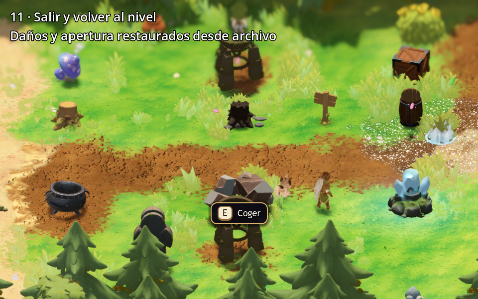
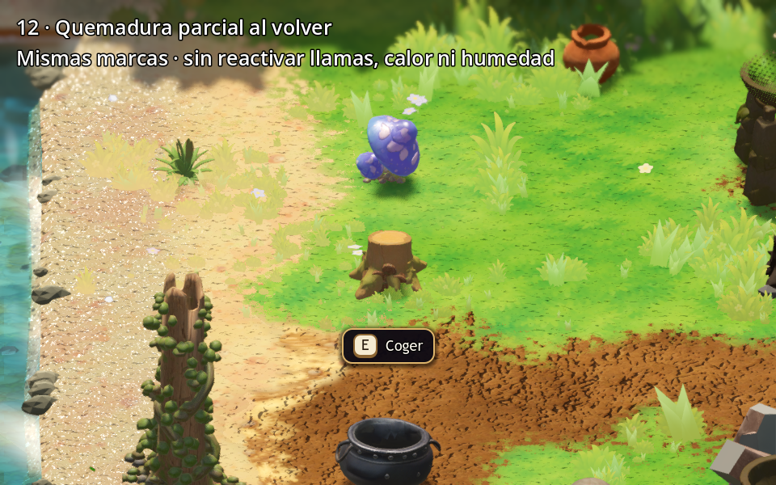
Los avisos de user://, animaciones preexistentes de NPC y recursos al cerrar se conservan en el log. No se confunden con los fallos de comprobaciones.